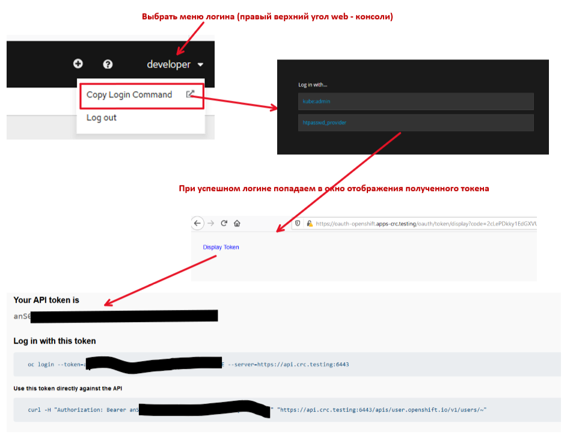

Этот проект демонстрирует размещение API в среде OPENSHIT. API работает с базами данных postgress и couch-db в среде OPENSHIFT
swagger - файлы для Rest API расположены в папке: ../API
{
"port": 8080
}
{
"version": 1,
// Host БД Postgres
"DB_HOST": {
"searchPatterns": [
"env:DB_HOST", // <---- env переменная при запуске в контейнере openshift
"file:/server/localdev-config.json:$.DB_HOST" // <---- параметр из файла localdev-config.json при запуске локально
]
},
// Порт БД Postgres
"DB_PORT": {
"searchPatterns": [
"env:DB_PORT",
"file:/server/localdev-config.json:$.DB_PORT"
]
},
//Имя БД Postgres
"DB_NAME": {
"searchPatterns": [
"env:DB_NAME",
"file:/server/localdev-config.json:$.DB_NAME"
]
},
// Пользователь БД Postgres для подклчения к БД
"DB_USER": {
"searchPatterns": [
"env:DB_USER",
"file:/server/localdev-config.json:$.DB_USER"
]
},
// Пароль пользователя БД Postgres для подключения к БД
"DB_PSW": {
"searchPatterns": [
"env:DB_PSW",
"file:/server/localdev-config.json:$.DB_PSW"
]
},
// Host БД couchdb
"DBC_HOST": {
"searchPatterns": [
"env:DBC_HOST",
"file:/server/localdev-config.json:$.DBC_HOST"
]
},
// Порт БД couchdb
"DBC_PORT": {
"searchPatterns": [
"env:DBC_PORT",
"file:/server/localdev-config.json:$.DBC_PORT"
]
},
// Протокол для обращения к БД couchdb (http, https)
"DBC_PROT": {
"searchPatterns": [
"env:DBC_PROT",
"file:/server/localdev-config.json:$.DBC_PROT"
]
},
// Имя БД couchdb
"DBC_NAME": {
"searchPatterns": [
"env:DBC_NAME",
"file:/server/localdev-config.json:$.DBC_NAME"
]
},
// Логин пользователя БД couchdb
"DBC_USERNAME": {
"searchPatterns": [
"env:DBC_USERNAME",
"file:/server/localdev-config.json:$.DBC_USERNAME"
]
},
// Пароль пользователя БД couchdb
"DBC_PSW": {
"searchPatterns": [
"env:DBC_PSW",
"file:/server/localdev-config.json:$.DBC_PSW"
]
}
}
При запуске локально необходимо настроить параметры подключения к базам данных из файла server/localdev-config.json. Файл не попадает в source control - чтобы не передавать локальные секретные настройки. Пример файла показан ниже:
{
"DB_HOST": "localhost",
"DB_USER": "*****",
"DB_PSW": "*****",
"DB_NAME": "*****",
"DB_PORT": "*****",
"DBC_HOST": "*****",
"DBC_PROT": "http",
"DBC_PORT": 80,
"DBC_NAME": "*****",
"DBC_USERNAME": "*****",
"DBC_PSW": "*****"
}
pic-1
БД postgress работает по собственному протоколу. Поэтому, нужно "пробросить" порт pod-а, на котором запущена БД на локальную станцию. Для этого:
oc login --token=your token --server=openshift api url
команду можно скопировать, сгенерировав токен доступа 
pic-2
oc project YourProjectName
oc port-forward postgresql-1-2wvpk 15432:5432
postgresql-1-2wvpk - имя пода
pic-3
15432 - номер локального порта рабочей станции 5432 - номер порта pod в OpenShift
Результат работы команд показан ниже
PS C:\Users\PavloShcherbukha> oc login --token=**** --server=https://*****
Logged into "https://api.crc.testing:6443" as "developer" using the token provided.
You have access to the following projects and can switch between them with 'oc project <projectname>':
bnk-dev
* bnkdem-dev
bnkdem-int
bnkdem-prod
Using project "bnkdem-dev".
PS C:\Users\PavloShcherbukha> oc port-forward postgresql-1-2wvpk 15432:5432
Forwarding from 127.0.0.1:15432 -> 5432
Forwarding from [::1]:15432 -> 5432
Handling connection for 15432
Handling connection for 15432
Handling connection for 15432
Handling connection for 15432
Handling connection for 15432
Handling connection for 15432
Handling connection for 15432
Handling connection for 15432
Handling connection for 15432
Запустить команды:
npm inststall
npm start
При успешном запуске должны успешно отработать тестовые кейсы при локальном запуске приложения Составные части API
Для запуска приложения на Openshift необходимо выполнить шаги deployments